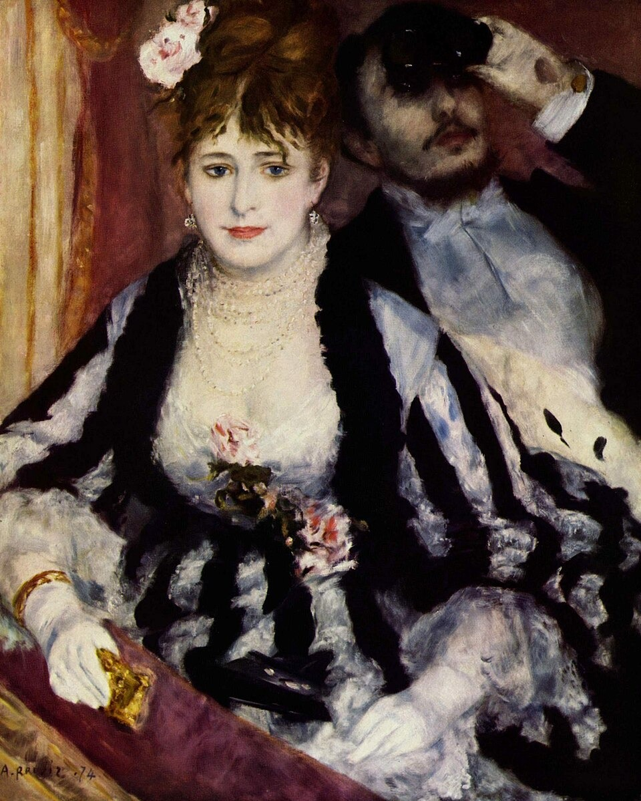

包厢 La Loge (The Theatre Box)
雷诺阿 · 1874年 · 伦敦考陶尔德美术馆
Pierre-Auguste Renoir · 1874 · The Courtauld, London
图片：Wikimedia Commons，公有领域 / Image: Wikimedia Commons, public domain

发现 · Discover
一幅关于“看”的画 A painting about looking
女子看着我们，她的男伴却举着望远镜，看向剧院里的其他观众。
The woman looks towards us, while her companion trains his opera glasses on other members of the audience.
画室里的包厢 A box in the studio
这个场景是雷诺阿在画室里布置的。扮演这对男女的，是他的弟弟埃德蒙和职业模特妮妮·洛佩斯。
Renoir staged the scene in his studio. His brother Edmond and the professional model Nini Lopez posed as the couple.
条纹裙 The striped dress
妮妮穿的条纹裙，是19世纪70年代最时髦的款式。
Nini's striped dress was the height of fashion in the early and mid 1870s.
耳环和手镯 Earrings and bracelet
她耳边垂着一对钻石耳环，握着望远镜的手腕上，还戴着一只金手镯。
Diamond earrings hang from her ears, and a gold bracelet circles the wrist that holds her opera glasses.
大胆的黑色 Bold black
印象派理论不太赞成用黑色，雷诺阿却在这里用得很浓：埃德蒙的晚礼服、望远镜，还有条纹裙。
Impressionist theory frowned on black, yet Renoir used it boldly here: Edmond's evening dress, the opera glasses, the stripes.
一个新题材 A new subject
一对时髦的现代男女坐在剧院包厢里，这在当时的艺术里是全新的题材。
A fashionable modern couple in a theatre box was a new subject for fine art at the time.
第一届印象派画展 The first Impressionist exhibition
1874年，这幅画在第一届印象派画展上首次展出。《日出·印象》也在同一场画展上。
In 1874, the painting was first shown at the first Impressionist exhibition, the same show as Monet's Impression, Sunrise.
故事 · The story
ACT I 第一幕 · 剧院里的巴黎 Paris at the theatre
19世纪的巴黎，去剧院不只是看戏，也是为了看人、被人看。雷诺阿在画室里布置了一个包厢，请弟弟和一位模特来扮演一对男女。
In 19th-century Paris, going to the theatre was not just about the play: it was about seeing and being seen. Renoir set up a theatre box in his studio and asked his brother and a model to pose as a couple.
1874年 · 伦敦考陶尔德美术馆 / 1874 · The Courtauld, London
ACT II 第二幕 · 1874年的画展 The exhibition of 1874
1874年，这幅画在第一届印象派画展上展出。评论家花了很多篇幅谈它的新意，就连不喜欢那次画展的人，也没有直接批评它。
In 1874, it was shown at the first Impressionist exhibition. Critics wrote at length about its novelty; even those who disliked the exhibition did not attack it directly.
1874年 · 伦敦考陶尔德美术馆 / 1874 · The Courtauld, London
ACT III 第三幕 · 425法郎 425 francs
画展之后，这幅画没有卖出去。据雷诺阿自己说，他后来以425法郎把它卖给了一位画商，正好够付拖欠的房租。1948年，它随塞缪尔·考陶尔德的遗赠来到了考陶尔德。
After the exhibition, the painting found no buyer. By Renoir's own account, he later sold it to a dealer for 425 francs, exactly the rent he owed. In 1948, it came to The Courtauld as part of Samuel Courtauld's bequest.
1874年 · 伦敦考陶尔德美术馆 / 1874 · The Courtauld, London
她看着我们，他看着别人。 She looks at us; he looks at everyone else.
作品档案 · Artwork record
| 画家（生卒年） · Artist (dates) | 皮埃尔-奥古斯特·雷诺阿（1841–1919） / Pierre-Auguste Renoir (1841–1919) |
|---|---|
| 画名 · Title | 包厢 / La Loge (The Theatre Box) |
| 年份 · Date | 1874年 / 1874 |
| 材质 · Medium | 布面油画 / Oil on canvas |
| 尺寸 · Dimensions | 80 × 63.5 cm |
| 收藏地 · Collection | 伦敦考陶尔德美术馆（塞缪尔·考陶尔德信托；1948年塞缪尔·考陶尔德遗赠） / The Courtauld, London (Samuel Courtauld Trust; Samuel Courtauld bequest, 1948) |
关于画家 · About the artist
皮埃尔-奥古斯特·雷诺阿（1841–1919），法国画家。他和莫奈在学画时就是好友，是印象派的核心人物之一。19世纪80年代，他开始离开印象派，转向古典艺术。
Pierre-Auguste Renoir (1841–1919) was a French painter. He and Monet became friends as students, and he was one of the leading Impressionists. In the 1880s he began to move away from Impressionism towards classical art.
更多雷诺阿的画 · More by Pierre-Auguste Renoir